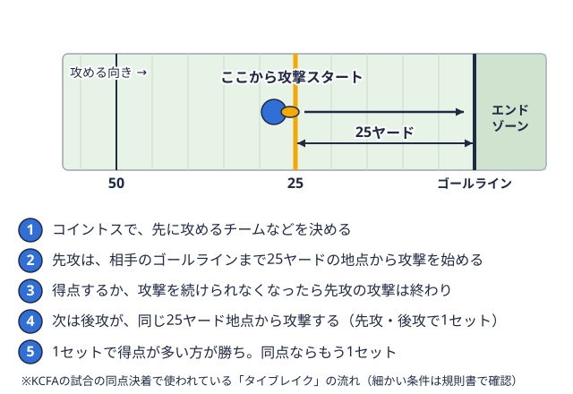

観戦ガイド 2026-10-21
アメフトのチャレンジ制度とは？リプレー検証の対象・回数・タイムアウトを解説
接戦の終盤、ヘッドコーチがサイドラインフィールドの長い辺にある境界線。ボールを持った選手がここに触れるか出ると、その場でプレーが止まる。 用語辞典で見るから審判員に何かを伝え、試合が止まる。しばらくしてレフリーが「レビューの結果、フィールド上の判定は変更されません」とアナウンスする。大学アメフトを観ていて、こうした場面に出会ったことはないでしょうか。これはインスタント リプレーと呼ばれる、ビデオによる判定の検証の仕組みです。この記事では、日本アメリカンフットボール協会（JAFA）が公開している2026〜27年度版の公式規則書をもとに、リプレー検証とチャレンジ制度の決まりを整理します。何回まで要求できるのか、どのプレーが対象になるのか、失敗するとどうなるのか。観戦のときにも、試合を戦う側にとっても知っておきたい点を順に説明します。
用語辞典で見るから審判員に何かを伝え、試合が止まる。しばらくしてレフリーが「レビューの結果、フィールド上の判定は変更されません」とアナウンスする。大学アメフトを観ていて、こうした場面に出会ったことはないでしょうか。これはインスタント リプレーと呼ばれる、ビデオによる判定の検証の仕組みです。この記事では、日本アメリカンフットボール協会（JAFA）が公開している2026〜27年度版の公式規則書をもとに、リプレー検証とチャレンジ制度の決まりを整理します。何回まで要求できるのか、どのプレーが対象になるのか、失敗するとどうなるのか。観戦のときにも、試合を戦う側にとっても知っておきたい点を順に説明します。
なお、リプレーを採用するかどうかは競技団体ごとに決められます。関東学生アメリカンフットボール連盟（KCFA）のTOP8・BIG8で各試合がどのような設備と運用でリプレーを行っているかは、本記事の調査時点でKCFAの公式サイトから確認できませんでした。この記事は「公式規則書に書かれているリプレーの決まり」の解説であり、特定のリーグや会場での実施状況を示すものではありません。実施の有無や運用の詳細は、連盟の公表情報や試合当日の案内で確認してください。
インスタント リプレーとは何か
規則書の第12篇は、インスタント リプレーを「試合の審判員によるフィールド上での決定を、ビデオレビューによって変更しない（アップヘルド）か、変更する（オーバーターン）ためのプロセス」と定義しています。
大切なのは、このプロセスが「フィールド上の判定は正しい」という前提で行われることです。判定を覆すには、モニターに映るビデオから、リプレー オフィシャル（ビデオを確認する審判員）が「その判定は誤りだ」と疑いの余地なく確信できる、明確かつ明白な証拠が必要です。そうした証拠がなければ、フィールド上の判定は変更されません。
つまり、リプレーは「少しでも怪しければやり直す」ものではありません。映像を見ても決め手がないときは、元の判定が残ります。観戦中に「映像ではどうも怪しく見えるのに判定が変わらない」と感じる場面があっても、この基準が背景にあります。
採用するかどうかは競技団体が決める
規則書は、どの競技団体もインスタント リプレーを採用できるが、必須ではないと定めています。採用する場合は、規則書第12篇を守らなければなりません。
また、異なる競技団体のチーム同士の試合では、ホームチームがリプレーを採用する場合、ビジティングチームはそれを拒否できません。反対にホームチームが採用しない場合は、ビジティングチームが採用を希望しても受け入れる必要はありません。
ブースの審判員がいない試合でも採用できる
リプレーを担当する審判員がブースにいない試合でも、リプレーを採用することは認められています。ただしその場合は、いくつかの例外が適用されます。
- レフリーが最終決定者になり、もう1人の審判員をレビューに参加させて意見を求められます。
- レビューに使う機器は、サイドラインやエンドゾーン両ゴールラインの外側にある、奥行き10ヤードの得点エリア。ここにボールを持ち込むと得点になる。用語辞典で見るに沿ったリミット ラインの外側、かつチームエリアの完全に外側に置かなければなりません。
- レフリーともう1人の審判員がレビューを行う場所は、観客やサイドラインの関係者から遮断され、セキュリティが保たれていなければなりません。
レビューが始まる2つの経路
規則書では、フィールド上の判定をレビューするために試合を止める方法は2つあります。
- リプレー オフィシャルが止める：リプレー オフィシャルとそのクルーは、試合の毎プレーをレビューしています。次のプレーが正当に始まる前であれば、「フィールド上の判定に誤りがあると信じるに値する証拠がある」「そのプレーがレビューの対象である」「レビューの結果が試合に重要で直接的な影響を与える」の3つを確信できたとき、いつでも試合を止められます。
- ヘッドコーチがチャレンジする：いずれかのチームのヘッドコーチが、試合の中断を要求して判定に異議を唱えます。
ここで注意したいのは、フィールド上の審判員は、レビューを要求して試合を中断することはできないという点です。審判員が「自分の判定が不安だからビデオで確認する」という使い方は、規則上は想定されていません。例外は、ブースの審判員がいない試合でコールされたターゲティングヘルメットの頭頂部や、無防備な相手の首・頭を狙って強く当たる、危険な反則。用語辞典で見る（後述）です。
ヘッドコーチのチャレンジ：回数とタイムアウトの関係
何回まで要求できるか
ヘッドコーチは、次にボールが正当にプレーに移される前に、タイムアウトを取って「前のプレーの判定にチャレンジする」ことをレフリーに伝えることで、チャレンジを要求できます。
回数は、1試合につき2回です。最初の2回のうちどちらかに成功した場合は、3回目のチャレンジの権利が与えられます。
また、チャレンジは、そのチームにチーム タイムアウトが残っている場合にのみ要求できます。前後半または超過節同点で終わった試合に勝敗をつける延長戦。決まった地点から両チームが1回ずつ攻撃する。 
成功したときと失敗したとき
チャレンジの結果によって、タイムアウトの扱いが変わります。
| 結果 | タイムアウトの扱い |
|---|---|
| 判定が変更された（オーバーターン） | チーム タイムアウトは課されない |
| 判定が変更されなかった（アップヘルド） | 前後半の3回のうち1回（超過節では1回）として課される |
| そのプレーや判定がレビューの対象ではなかった | 同じく、前後半の3回のうち1回（超過節では1回）として課される |
つまり、チャレンジに失敗するとチャレンジの権利を使うだけでなく、タイムアウトも1つ失います。残り時間が少ない場面でタイムアウトを失うことは、その後の時間の使い方に直接影響します。そのため、ヘッドコーチは「覆る可能性」と「タイムアウトを失うコスト」を天秤にかけて判断することになります。
すでにレビュー済みの判定へのチャレンジ
リプレー オフィシャルが試合を止めて、すでに決定した判定に対しては、ヘッドコーチはチャレンジを要求できません。ただし、同じプレーであっても、当初のレビューに含まれていなかった別の要素については、チャレンジを要求できます。
チャレンジの合図
ブースの審判員がいない試合では、ヘッドコーチがレビューのためにタイムアウトを要求する際、リプレー チャレンジ フラッグをフィールド オブ プレーに投げ入れなければならないと規則書の例外規定に書かれています。
どのプレーがレビューできるのか
レビュー可能と規定されていないプレーや判定は、レビューできません。規則書が挙げているレビュー可能なプレーを、種類ごとに整理します。
| 分類 | 主なレビュー可能なプレー |
|---|---|
| 得点に関わるプレー | タッチダウンボールを持って相手のエンドゾーンに入る、またはその中でパスをキャッチして得る6点の得点。 用語辞典で見るまたはセイフティ守備の最後方に立つ選手。また、攻撃側が自陣エンドゾーンで止められて相手に入る2点の得点もこう呼ぶ。用語辞典で見るの可能性があるプレー。フィールドゴールゴールポストの間にボールを蹴り込んで得る、3点の得点。キックが成功したときだけ入る。用語辞典で見るがクロスバーの上下どちらを通ったか、アップライトの内側か外側か 用語辞典で見るまたはセイフティ守備の最後方に立つ選手。また、攻撃側が自陣エンドゾーンで止められて相手に入る2点の得点もこう呼ぶ。用語辞典で見るの可能性があるプレー。フィールドゴールゴールポストの間にボールを蹴り込んで得る、3点の得点。キックが成功したときだけ入る。用語辞典で見るがクロスバーの上下どちらを通ったか、アップライトの内側か外側か |
| パス | パスの成功・不成功・インターセプト相手の投げたパスを空中で奪い取ること。奪った側が攻撃権を得る。用語辞典で見るの判定。フォワードパスへのタッチ。フォワードかバックワードかの判定 |
| ルースボール・ボールの確保 | ファンブルボールを持つ選手が、落としたりはじかれたりして、ボールを持ち続けられなくなること。用語辞典で見ると判定されたルースボール。ルースボールのリカバーやタッチがインバウンズかアウト オブ バウンズフィールドの境界線の外側と、境界線そのもの。ボールを持った選手が出ると、その場でプレーが止まる。用語辞典で見るか |
| ボールキャリアの前進地点 | 第1ダウン新しい4回の攻撃の1回目。10ヤード以上進むと、また最初から4回の攻撃が与えられる。 用語辞典で見る獲得やゴールラインフィールドの両端にある、エンドゾーンとの境目の線。ボールを持ってここを越えると得点になる。用語辞典で見るに関わる前進地点、ファンブルした地点 用語辞典で見る獲得やゴールラインフィールドの両端にある、エンドゾーンとの境目の線。ボールを持ってここを越えると得点になる。用語辞典で見るに関わる前進地点、ファンブルした地点 |
| キック | キックへのタッチ。スクリメージ キックがニュートラル ゾーン攻守それぞれの線にはさまれた、ボールの長さぶんの空間。プレー開始の瞬間、守備側は入れない。 用語辞典で見るを越えたか。フェア キャッチ蹴られたボールを受ける選手が合図を出してキャッチすること。その場で止まり、相手から当たられない。用語辞典で見る シグナル後のレシーブチームの前進 用語辞典で見るを越えたか。フェア キャッチ蹴られたボールを受ける選手が合図を出してキャッチすること。その場で止まり、相手から当たられない。用語辞典で見る シグナル後のレシーブチームの前進 |
| ターゲティング | リプレー オフィシャルによるすべてのターゲティングのレビュー |
| その他 | フィールド上のプレーヤーの人数、ゲームクロックの修正、ダウン攻撃1回分のこと。ボールが動き出してから止まるまでが1回で、攻撃側は4回まで続けて行える。用語辞典で見る数の修正 |
ここで取り上げたのは主なものです。条文全体はさらに細かく、たとえばボールキャリアがアウト オブ バウンズと判定された場合は、条文に定める例外を除いてレビューできません。また、ゴールラインに対するボールの位置は、原則として常にレビュー可能とされています。
レビュー可能と規定されていない場合
リプレー オフィシャルは、ゲームクロックを含め、試合の結果に重大な影響を与える可能性がある明らかなエラーを、プレーがレビュー可能かどうかにかかわらず訂正できます。ただし、レビュー可能と規定されていない反則罰則が決まっているルール違反。審判が旗を投げて知らせ、陣地を下げられるなどの罰がある。用語辞典で見るは含まれません。
リプレー オフィシャルがコールできる反則
リプレー オフィシャルは、フィールド上の審判員がコールしなかった次のような反則を、ビデオの確認によってコールできます。
- ニュートラル ゾーンを越えているプレーヤーによるフォワードパスや、前方への手渡し
- オンサイドキックで、ボールにタッチできる資格が生じる前のキックチームのブロック
- ライブボール中や交代違反のフラッグが投げられた場合の、フィールド上のプレーヤーの人数
- 明確かつ明白なターゲティング
ターゲティングのレビュー
ターゲティングは、ヘルメットのクラウン（頭頂部）を使った強力な接触で相手を痛めつけることを目的に狙う行為や、無防備な相手の首や頭部を狙う行為を指す反則です。反則の種類についてはアメフトの反則一覧の記事で整理しています。
リプレーの規定では、リプレー オフィシャルは、規則書9-1-3と9-1-4にあるすべてのターゲティングの反則をレビューします。このレビューは、ターゲティングの反則に関するすべての要素が対象になります。
フィールド上の審判員がコールしなかったターゲティングについても、すべての要素がビデオで確認できる場合は、リプレー オフィシャルが反則をコールできます。ただし、このレビューは、ヘッドコーチのチャレンジによって始めることはできません。つまり「見逃されたターゲティングをチャレンジで指摘する」という使い方はできません。
一方、ブースの審判員がいない試合では、フィールドでコールされたすべてのターゲティングについて、レフリーが試合を止めてレビューを行います。この場合に限っては、ヘッドコーチがチーム タイムアウトを要求でき、チャレンジの権利が残っていれば、ターゲティングのレビューを要求することもできます。
試合時間に関わる決まり
残り2分を宣告するタイムアウトの後
第2節と第4節の「残り2分を宣告するタイムアウト」の後は、リプレーの結果が試合時間にも影響します。判定が変更された結果、正しい判定ならゲームクロックが止まるはずだった場合は、ゲームクロックはリプレーでボールがデッドになった時間に戻されます。そのうえで、レフリーは10秒を減算し、レフリーのシグナルでクロックを動かし始めます。どちらのチームも、チーム タイムアウトを使えば、この10秒減算を避けられます。
また、各節の終了時にゲームクロックを修正できるのは、ボールがデッドになった時点で時間が残っていたことを示す明確かつ明白なビデオの証拠があるなど、規則書が挙げる条件を満たす場合に限られます。第4節ではゲームクロックを戻す際の点差が8点以下であることも条件の一つです。こうした条件は細かく、実際の試合では審判員の説明に従うことになります。
レビューにかかる時間
リプレー オフィシャルがレビューのために試合を止める回数に制限はありません。レビューの完了までの時間は2分を超えないことが望ましいとされていますが、試合結果に影響を及ぼす場合やレビューに複数の要素がある場合は、時間を制限しないと書かれています。
パーソナル ファウルなどの扱い
リプレーでの結果にかかわらず、パーソナル ファウルとスポーツマンらしからぬ行為の反則に対する罰則は、いつでも施行されます。リプレーで判定が変わっても、そのプレー中のこうした反則が帳消しになるわけではありません。
サイドラインでの映像の扱い
規則書の序文は、コーチがサイドラインでビデオを使って審判員に説明しようとすることを、明確に戒めています。プレーヤー、コーチ、チーム関係者がタブレットを持って審判員に近づき、ビデオの批評をしたり、ビデオを見せようとしたりした場合は、自動的にスポーツマンらしからぬ行為の反則になるとされています。1試合に2回のスポーツマンらしからぬ行為の反則を犯したコーチは、退場になります。
リプレーでの異議の通し方は、ヘッドコーチのチャレンジという正規の手続きに限られている、と理解すると整理しやすいでしょう。
2026年度の変更点
JAFAは、2026年7月7日付で「2026年度・公式規則変更内容・決定報」を公表しています。リプレーに関わる変更は次の通りです。
ヘッドコーチのチャレンジの回数
従来は、インスタント リプレーが採用されている試合で、最初（1回目）のチャレンジが成功した場合に限り2回目が認められ、1試合につき最大2回でした。2026年度からは、ヘッドコーチは1試合につき2回のチャレンジができ、そのうち少なくとも1回が成功すれば3回目が認められます。チャレンジは、そのチームにチーム タイムアウトが残っている場合にのみ要求できます。
残り2分後のビデオレビューでのプレークロック
従来、ビデオレビュー後のプレークロックは25秒にセットされていました。2026年度からは、前後半の残り2分を宣告するタイムアウトの後に、リプレー オフィシャルが試合を止めてレビューを行う場合、プレークロックはその時点で中断されます。フィールド上の判定が変更されなければ、レフリーのシグナルでレディ フォー プレーとなった時点から再開します。中断時のプレークロックが10秒未満だった場合は、10秒にセットされて再開します。
レビュー可能なプレーの追加
キックがグラウンドに触れた後、サイドラインを横切った地点が、2026年度からレビュー可能になりました。
編集上の変更
判定を変更（オーバーターン）する基準の記載場所も整理されました。従来は規則書12-7に規定されていましたが、2026年度からは12-1-3に規定されています。
これらの変更は2026年秋季公式戦から適用されます。規則は毎年見直されるため、観戦や出場の前に、最新の規則書で確認してください。
観戦のコツ：リプレーの場面で見たい3つのこと
- 誰が試合を止めたか：レフリーのアナウンスで、リプレー オフィシャルのレビューか、ヘッドコーチのチャレンジかがわかります。ヘッドコーチの場合は、「（チーム名）のヘッドコーチから（判定の内容）の判定についてチャレンジが要求されました」というアナウンスになります。
- 何をレビューしているのか：パスの成功なのか、前進地点なのか、キックへのタッチなのか。アナウンスで対象のプレーが示されます。
- 残り時間とタイムアウトの数：終盤に失敗したチャレンジは、タイムアウトを1つ減らします。直後の攻撃や守備の選択に影響が出るので、ベンチの動きも見どころです。
関東学生アメフトのTOP8・BIG8の試合を観るときも、接戦や終盤にこうした視点が使えます。試合の結果はTOP8の日程・結果やBIG8の日程・結果で、順位はTOP8の順位表やBIG8の順位表で確認できます。チームごとの成績はTOP8の記録室にもまとめています。同点でも勝敗が決まる関東独自の運用はアメフトのタイブレークルールを解説した記事に、キックに関する規則はスペシャルチームの役割の記事に、試合の基本の流れは大学アメフトの試合時間とルール入門にあります。
まとめ
- インスタント リプレーは、フィールド上の判定は正しいという前提で、明確かつ明白なビデオの証拠がある場合にだけ判定を変更する仕組みです。
- リプレーを採用するかどうかは競技団体が決めます。KCFAのTOP8・BIG8での実施状況は、本記事の調査時点で公式サイトから確認できていません。
- レビューは、リプレー オフィシャルが止める場合と、ヘッドコーチがチャレンジする場合の2経路があります。フィールド上の審判員は、レビューのために試合を止められません。
- ヘッドコーチは1試合に2回チャレンジでき、どちらかが成功すれば3回目の権利が与えられます。チーム タイムアウトが残っていることが条件です。
- チャレンジが成功すればタイムアウトは課されませんが、判定が変わらなければタイムアウトを1つ失います。
- ターゲティングのレビューはヘッドコーチのチャレンジでは始められません。ただし、ブースの審判員がいない試合には例外規定があります。
- 2026年度は、チャレンジの回数の規定、残り2分後のプレークロック、キックがサイドラインを横切った地点のレビュー可能化が変わりました。
出典
この部活・競技を応援したい方へ
協賛・応援はこちらから。
取材してほしい部活を募集中
あなたの部活・チームを取材してほしい方はこちらから。
オフシーズン・引退後に、長期インターンという選択
部活で培った力を実務で試す。16タイプ診断（30秒）で合う企業がわかります。